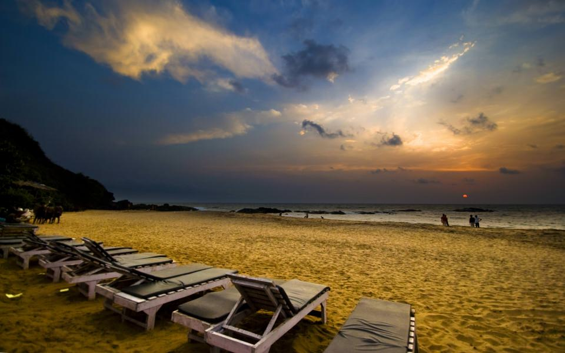

Goa is India’s smallest state by its geographical area and the fourth smallest by population. The state has been a very important historical and cultural centre since ancient times. In a Hindu scripture Mahabharata it is referred as Gopakpattan or Gomant and in Sutra- Samhita it was mentioned as Govapuri. Located on India’s West coast, Goa is a former Portuguese colony with prolific history. The state has unique blend of Indian and Portuguese culture, art and architecture that pulls approx 2.5 millions (wiki) tourists every year. And hence Goa is visibly different from the rest of India.
The magical land of Goa is a land of celebrations and festivities. Snuggled in the Konkan Coast Belt, It has a long coastline of approx 100 kilometers. Goa is primarily known for its beautiful beaches which are engrossed with oscillating palm trees and an astonishing nightlife. It is a wonderful place embraced by joy & happiness only. However, apart from beaches there is much more in Goa. It is such a destination that combines the charm of the old world fashion with exoticism of the new age. And this is the reason why Goa has always been visited by a huge number of national and international tourists each year. Goa is one such captivating tourist destination in India which has something to offer to every enthusiast traveler coming here, nevertheless of budget and varying travel habits. It is also a popular honeymoon destination. The real beauty of Goa lies in its beautiful beaches, places of worship and world heritage architecture. It also has bountiful flora and fauna, owing to its location on the Western Ghat Range and it is classified as a biodiversity hotspot.

Beaches in Goa :
Despite being the smallest state in India, Goa is synonymous to many captivating things that are best showcase of a life without stress and worries. The multitude of beaches in Goa offer a range of activities such as beautiful walks along the palm fringed shores sprawled with unique shells and intriguing boat rides. There are range of beach huts where tourist can stay in and restaurants in which one can taste local and delicious sea food. There are numerous beaches in the Goa but the beach that is perfect for you will fully depend upon the kind of experience you want to have. Some of the popular beaches of Goa can be named as Arambol, Agonda, Anjuna and Vagator, Calangute, Candolim, Cavelossim, Colva, Dona Paula - a popular beach. Palolem, Sinquierem, Bogomolo - a beautiful and serene beach near Vasco Da Gama.
How to Reach Goa
How to Reach Goa by Air:
Dabolim is the main domestic as well as international airport which is located at approximately 26 kilometer from Panji (capital city of Goa). This airport has two dedicated terminals – Terminal one is the domestic terminal and Terminal two is international terminal. This airport receives all major domestic flights including Air Asia, Air India, GoAir, Indigo, Jet Airways and SpiceJet from all major cities such as Bangalore, Delhi, Mumbai, Lucknow, Kolkata, Indore, Chennai and Pune. The airport is also served by flights from international destinations such as Muscat, Doha and Copenhagen. Travelers can hire private taxi/cab from outside the airport to reach anywhere in Goa.
How to Reach Goa by Road:
Goa has excellent network of roads and highways. The state is connected by four national highways that connect the city to the other major cities in India such as Mumbai, Mangalore, Belgaum, Hyderabad, Bangalore, Pune and Chennai. The state Government-run Kadamba Transport Corporation has many buses connecting Goa with other parts of India. Many privately operated buses also connect Goa to major cities in India.